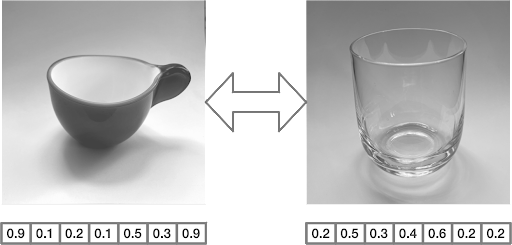
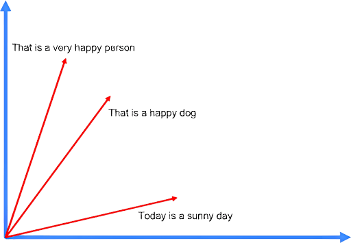

Vector search is a key function that can be performed between pairs of vectors.
- It is the process of finding data points that are similar to a given query vector in a set of vectors.
- Popular vector search uses include recommendation systems, image and video search, natural language processing, and anomaly detection.
- For example, if you build a recommendation system, you can use vector search to find (and suggest) products that are similar to a product in which a user previously showed interest.

Vector search in practice
Calculating the distance between vectors is a trivial operation using some math. Let's consider a simple example using sentences.
- The following example in the cartesian plane defines three sentences
- First, we calculate the vector embedding corresponding to each of the three sentences and store them
- We define the test sentence "That is a happy person" and calculate the corresponding vector embedding
- Finally, we compute the distance between the embedding of the test sentence and the three stored vector embeddings
Here's a graphical representation of the embeddings in a bi-dimensional vector space.

Let's now introduce the most popular distances that can be used in the comparison between the test sentence and the stored vectors.